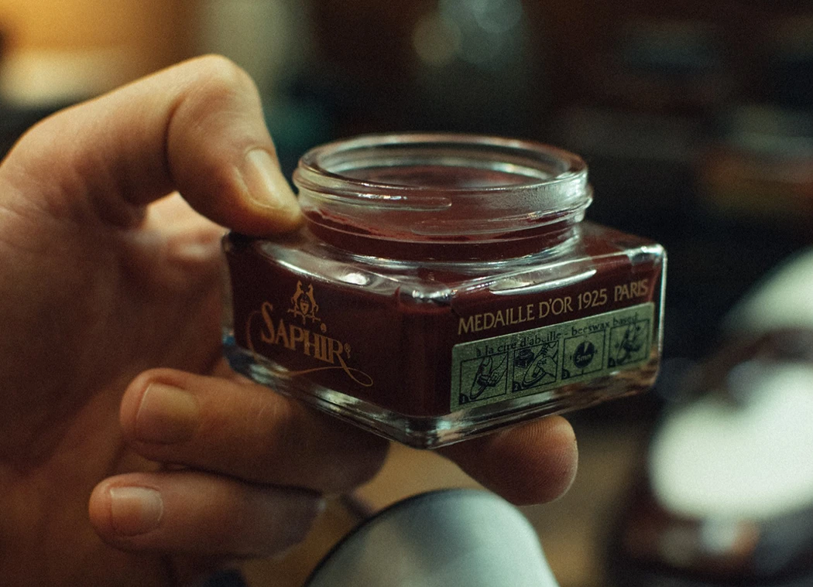

MANTENIMIENTO
Métodos para un tratamiento adecuado del calzado
En esta sección podrás aprender todo sobre el mantenimiento adecuado para tu calzado.
Limpieza de polvo y tierra
1
Se busca que el calzado quede libre de particulas que puedan adherirse al paño o a la crema y por consecuente, rayar el calzado. Finalizarlo con un cepillado con cerda de caballo o en su defecto limpiar el zapato con un trapo de algodón seco para corroborar que la piel quede completamente limpia.
Selección de producto a aplicar
Si el zapato se encuentra muy seco, la utilización de cremas es la óptima. Como primer mano puede ser un renovador de cueros o una crema/pomada hidratante de color (si se considera que el zapato está decolorado) o en su defecto, una crema incolora. Entre 2 y 4 manos bien absorbidas, aplicando de a pizcas del tamaño de una yema de dedo.
Aclaración: pueden utilizarse distintos pigmentos a lo largo del proceso en caso de requerirlo. Tambien se debe aplicar crema sobre los costados de las suelas y entre la suela y la capellada*.
2
Aplicación de ceras
3
Para seleccionar la cera ideal se debe tener en cuenta que se puede elegir una cera con un pigmento más claro o uno más oscuro ya que estos no aplican tanta coloración, pero al utilizarse varias capas del mismo, se puede alterar el tono del calzado a gusto y propósito. Luego dejar secar 5 minutos al finalizar.
Cepillado
Cepillar con cerda de caballo, o en su defecto, con un trapo de algodón seco. Si opta por utilizar el trapo, puede verter una gota de agua sobre el calzado para activar el producto y que de esa forma tome aún más brillo.
Aclaración: en caso de utilizar un cepillo de cerda, hágalo en seco.
4
ASESORAMIENTO
Marcas de productos recomendadas
Te ofrecemos recomendaciones para cremas y ceras tanto nacionales como internacionales.
